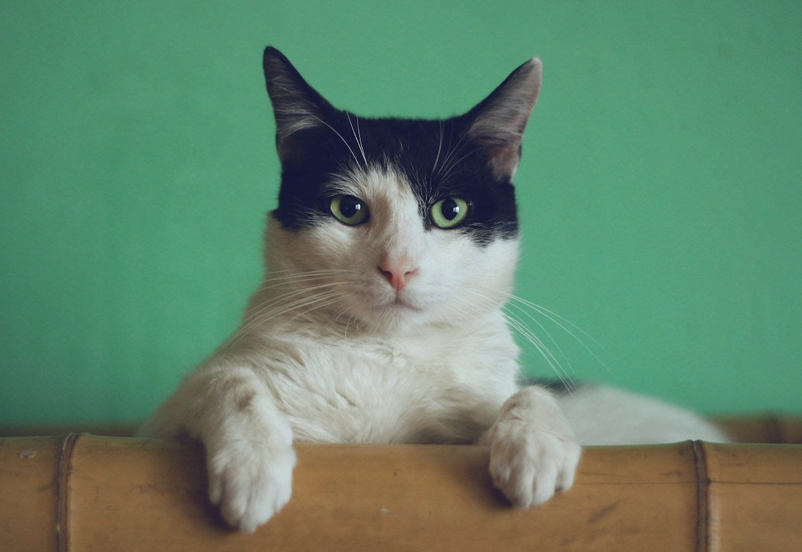

Um cuidado para hoje. Um próximo passo para depois.

Imagem ilustrativa. Cada pet tem seu próprio ritmo.
BANHO & TOSA / SIMULAÇÃO
Prepare a próxima visita.
DURANTE O CUIDADO
Saiba em que etapa estamos.
Exemplo com Bento, um pet fictício. Avance pelas etapas para conhecer a experiência de acompanhamento.
Bento · banho e tosaSimulação
01RecepçãoPreferências conferidas
02Em cuidadoRespeitando o ritmo do pet
03FinalizaçãoPreparando a saída
04Pronto para retiradaO aviso seria enviado à pessoa responsável
Recepção — exemplo, sem atendimento real.
UM LEMBRETE ÚTIL
Antes de a embalagem acabar.
Estime a duração a partir da quantidade que você já utiliza. A ferramenta não recomenda porções nem substitui orientação veterinária.
ALIMENTAÇÃO, HIGIENE & ROTINA
O que faz parte do dia.
Uma seleção ilustrativa. A loja confirma estoque, cobertura e entrega antes de aceitar.
PREÇOS DE DEMONSTRAÇÃO
Um cuidado com clareza.
O banho ou a entrega já estão confirmados?
Não. Esta é uma demonstração. A equipe precisa conhecer o pet, verificar a agenda e confirmar as condições antes do atendimento.
O ciclo de reposição define a quantidade de ração?
Não. Ele divide a quantidade restante pelo consumo que você informa. Quantidade, dieta e mudanças de alimentação devem ser orientadas por um profissional habilitado.